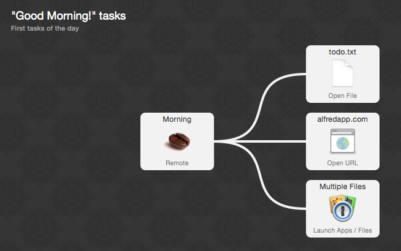
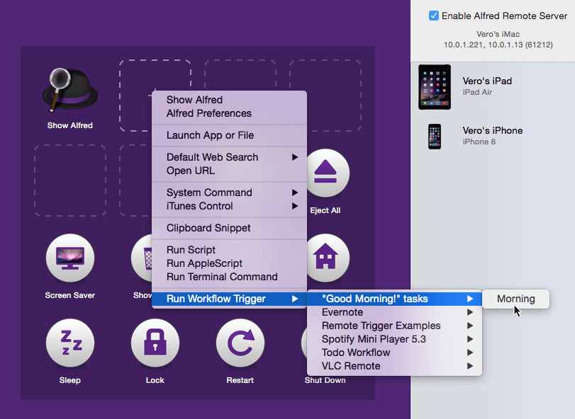
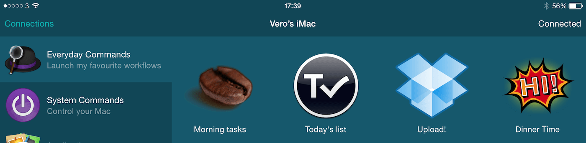
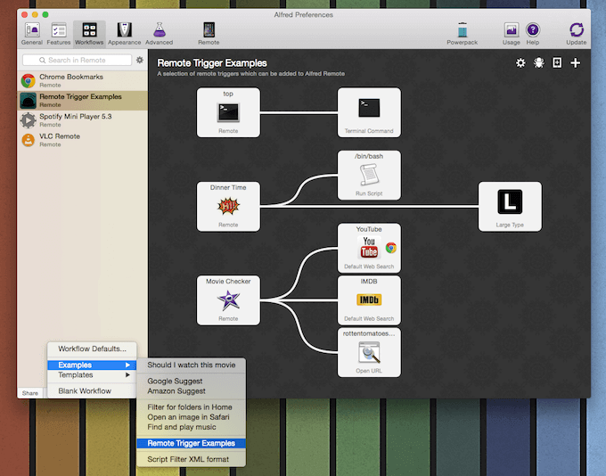
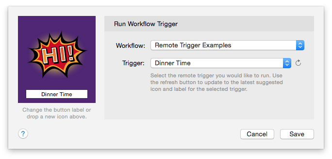

Adding Remote Triggers to your Workflows
Remote Triggers allow you to make your workflow actions available through Alfred Remote so that you can control your Mac from your iPad or iPhone.
- Learn how to Add a Remote Trigger to my own workflow
- Take a look at Workflow Trigger Examples
1. Add the Remote Trigger to your workflow
Adding a "Remote" trigger object to your workflow will make its associated workflow action available to add in your Remote. This is done in the Workflows tab of Alfred's preferences.
In the workflow you want to use from Remote, add a Remote object from the + in the top right (Triggers > Remote). Connect it to the appropriate action or actions you want to perform when pressing the button on Remote.

2. Add the action to your Remote page
In the Remote tab, under the "Run Workflow Trigger" action, you'll find the list of workflows containing Remote triggers.

3. Use it in Remote
You can now control that workflow from Remote, and the action will be available on your iPhone or iPad Remote.

Workflow Trigger Examples
To see a few built-in examples of workflow triggers, go to the Workflows tab in Alfred's preferences. Click the + button at the bottom of your workflows sidebar and choose Examples > Remote Trigger Examples.

This workflow contains three Remote trigger examples. Look at them carefully in the Workflow preferences to learn how they're built.
1. The "top" trigger
In this simple example, the trigger is connected to a Terminal Command. This trigger launches the "top" command in Terminal, showing you the top processes on your Mac.
2. The "Dinner Time" trigger
This second example runs a script where the text specified as {query} in the Remote object is passed on to two actions; The Run Script object, which reads out the {query} text using your Mac's Text-to-Speech, and the Large Type object, which shows the same query in large type on your screen.

3. The "Movie Checker" trigger
This third example is more advanced, and makes use of your macOS Selection to perform its action.
If you have text selected in macOS, pressing the Movie Checker object in Remote will launch three browser windows with the selected text as {query}.
For example, if you had highlighted the word "Inception" on your Mac, pressing the Movie Checker object in Remote will launch a YouTube search in Chrome, as well as an IMDB and Rotten Tomatoes search for the keyword in your default browser.
Discover and Create Remote workflows
On the Remote Workflow Triggers page, you can also download the Good Morning workflow as an example.
You'll find more examples on Packal by searching for the "Alfred Remote" tag, and on the Alfred Forum, where you'll also be able to get hands-on help with creating your own Remote workflows.